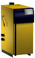

Field level¶
IoT multisensor¶
TODO esp 8266 description
requirements
upload stl file
Data logger¶
During the early implementing phase of the home automation system i needed some logging mechanism for bug finding.
And after implementing this interface at the plc and i kept it for data logging.
Meanwhile the usual data logging is realized within the control system (node red) but for redundancy purpose the mechanism is still alive.
The main script provides a IP listener for every configuret plc connection.
Messages from the remote clients will be parsed and stored in a db.
Wetter station¶
For the weather station I decided for the P03/3-Modbus from Elsner.

With it I can get the weather data: Brightness (east, south and west sun), wind speed, temperature and precipitation.
With the Modbus variant I want to keep the possibility open to connect several participants (in special room sensors) to the control system via the bus system.
The heating system¶
My heating consists of the 20qm solar collectors and the "romantic" stove in the living room as well as an ETA SH20 twin.

During the installation I saw that a maintenance interface is attached to the display.
On inquiry with the manufacturer I got the RS232 protocol and thus the possibility by a CM1241 to access it.
Here the protocoll:
- Byte startsign: alwas ’{’ == hex 0x7B
- Byte Servicekennung
- Byte Servicekennung
- Byte Anzahl der Nutzdatenbytes
- Byte Prüfsumme: alle Nutzdatenbytes addiert, modulo 256
- ab 6. Byte Nutzdaten
last Byte stoppsign alwas ’}’ == hex 0x7D
settings of serial interface:
19200 Baud, 1 Startbit, 8 Datenbits, 1 Stoppbit, NoParity, NoHandshake
Herewith I inform the heating control that it should send out the actual values cyclically:
#SEND_PTP_start(REQ := #cmd.eta_start,
"PORT" := #CP_Adress,
BUFFER := #frame_start);
#cmd.eta_start := FALSE;
#SEND_PTP_cmd(REQ:=#cmd.eta_cmd,
"PORT":=#CP_Adress,
BUFFER:=#frame_cmd);